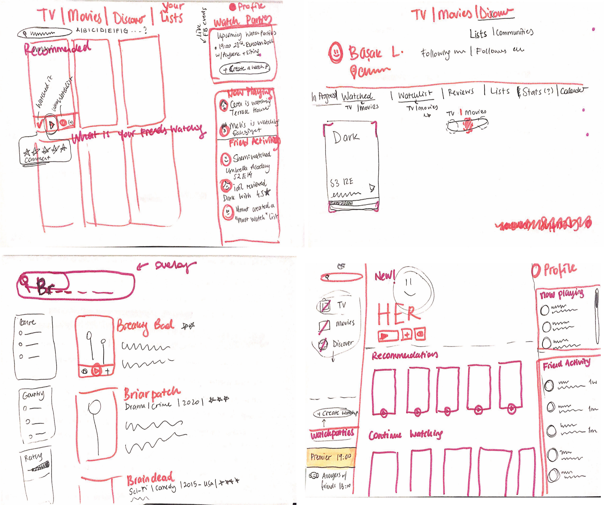

marbles
BRIEF
Design a third-party desktop web site or desktop app (not Netflix-branded) where the community can celebrate shared stories together through communal and authentic experiences.
OVERVIEW
Marbles is an desktop application for every kind of user group aiming to envable socialization within the streaming app as well as keeping a record of the movies and tv shows watched. It is a big social platform that the movies can be watched together within the friend groups or communities who share the same interest in movies. It was a 2 day Creative Jam by Adobe XD and Netflix and we were a group of 3 UX designers. There were other 570 groups from US, Canada and UK with total 1500 people.
- Ideation, Designing, Prototyping and Iterative processes were executed within the group.
Timeline: 2 days
Deliverables: Ideation Map, Wireframes. Final Design
Tools: Adobe XD
PROCESS
 1
1
IDEATE
Goal: To develop a concept for the potential solution based on the brief and personal ideas
Process / Deliverables: Crazy 8 Technique
CRAZY 8 TECHNIQUE
We conducted a quick ideation process to create creative ideas to include in our desktop application. We tried to come up with some crazy but feasible ideas which can distinguish us from other competitors.

After prioritizing what to include in our application like how to enhance the social interaction of families and friends but we needed to come up with an creative idea to distinguish our project form others. So we decided to add an “Online premier event” where new movies determine a time internationally and users can watch it together as it premiers and an online chat function is available.

After deciding on the main functions, we placed them on the screens before designing to have an easier process and tried to decide on optimum number of pages to design.
2DESIGN
Goal: To design the optimum layout in the light of the ideas and the brief
Process / Deliverables: Sketches, Final Design
SKETCHES
After determining the basics, we sketched out our ideas seperately and afterwards we shared and discussed about them and extracted/ combined the best features.
Since it was a 2 day project we directly jumped into the final design without creating wireframes so it didn’t took too much time.
FINAL DESIGN
In the final day we turned our sketches and ideas into final design with adding the UI aspects. Deciding on colours and fonts didn’t take much time since we were sure that we wanted to pursue a dark theme. Also to the prototype, we spend some time to include interactive aspects to make it more realistic and usable.
I belive we expressed our focus on the social side of watching movies/ series with including communities, watcparties and premier events and some fun side properties.